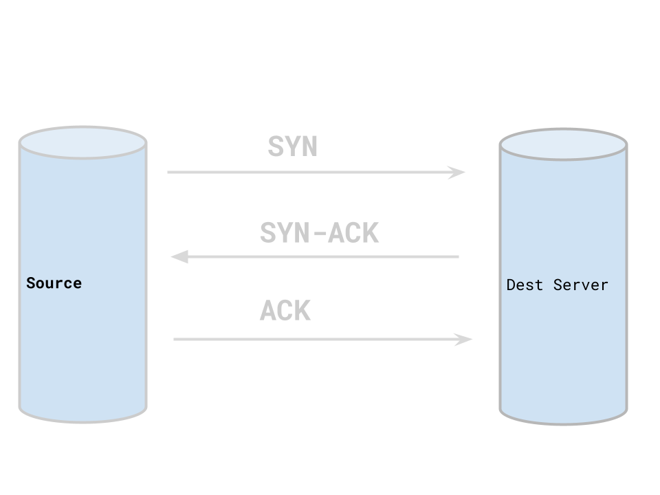

Hunting Before Day Zero
By Ryan LaBouve
$ whoami
Ryan LaBouve
- Founder of Startup.Security
- Disaster Recovery
(storms not hard-drives)
Startup.Security
- Security the tools, technologies, companies that are building the future (we want)
- Helping series A,B,C startups kickstart security
- Security Research
My Background
Any Why this topic is interesting to me
- 👇 Software engineer
- 👇 DevOps+SysAdmin
- 👉 Offensive Security
First principles up
Not big tools down
OSS + DIY, startup life
Today's Agenda
Understanding fundamental signals from Linux gives us insight to compromise.
-
STORY MODE
Running into signs of compromise -
Signals of compromise
philosophy and methodology -
Signals in the wild
Conclusions and perspective
What you'll get out of this?
Beginner / Intermediate Practitioner
Better understanidng of the signals available from Linux and how they can lead to situational system awareness.
Intermediate / Advanced Practitioner
Understand that _basic_ signals produced by our systems give us the ability to hunt novel vulnerabilities.
I: STORY MODE: RUNNING INTO SIGNS OF COMPROMISE
How to accidentally
discover a zero-day
Zero-day
A vulnerability that has not been publicly disclosed.
- No patch
- No way to track
Client:
Client goal: stand up firewall on a microservice
Critical service
Service cannot go down
Startups in hyper-growth
Growth is prioritied over everything (e.g. security)
Microservices a popular choice for companies in hyper-growth mode
Microservices growth mode math!
I can...
i. "divide big problems into smaller problems
ii. "Hire 1 teams to solve 1 problem"
iii. 1000 problems? 1000 teams! QED
TODO: Make the dinosaur cry and saying something sad
Microservices 101
Do one small thing!
North-South vs East West traffic
Common for large companies to have 100's of microservices
Infra at hyperion

We've simplified the infra a bit.
RBAC service at hyperion
Traffic patterns for RBAC service
EW traffic to other services,
Technical Review of RBAC service
Node API: /api/v1/authorize?user_id=1&resource_id=2&action=3
Redis cache (Key Value store) (on box)
Direct connection to user database (off box)
What could happen if we compromised this
poison Redis cache
Exfil the data
Move laterally
How are we going to bring a firewall up?
Identify everyday traffic
Identify maintence traffic
Identify deploy traffic
(Exercise 1)
Our First Signals: SYN / SYN-ACK's
Image of syn and syn-ack in TCP
We'll focus on TCP over UDP, ICMP, Other traffic
Successful 3-way handshake
Wireshark

TCPDump
sudo tcpdump 'tcp[tcpflags] & tcp-syn != 0'

LibPCAP
Libpcap is a library for capturing and processing network packets in real-time

eBPF
eBPF is a virtual machine that runs in the kernel and allows you to write programs that can be attached to various kernel hooks.

LibPCAP vs eBPF
Our solution:
agent to track SYN / SYN-ACK
Spits out counts to prom
transforms output to firewall
Demo of tool
TODO: create demo of tool
I/iii. STORY MODE: A TWIST IN TRAFFIC
After monitoring SYN / SYN-ACK's for a week
Noticed something weird
Unexpected E-W traffic
TODO: Image
SUS: Tracking traffic
TODO: Log into machine and see something weird
Emoji before and after red-team mode
Scan perimeter
Detailed scan on open ports
Decide and deliver RCE
Pivot into RBAC service
Shenanigans!
- Spoof authentication
- Exfil user data
II. SIGNALS OF COMPROMISE: PHILOSOPHY AND METHODOLOGY
We learned a small signal can reveal quite a bit about a system
Basic vs Specific Signals
Need to workshop the word here Where do I put the following? Behavioral analysis Signature based detection (e.g. file names or metadata) Machine learning Threat Intelligence databases
Ex; detecting C2 with specific signals
Give example of Cobalt running based on processes
Specific signal cat and mouse game
Ex; detecting C2 with basic signals
Need to workshop the word here
What other small signals do we have?
File system
Network
To work with small signals successfully we need
way to collect them => eBPF
way to vizualize them => grafana
way to compose them => prometheus
eBPF
Run user code in the kernal
What many "big tools" (e.g. CrowdStrike Falcon) uses to monitor endpoints
This will be a recurring theme in tracking signals
Grafana
Vizualization tool
Can be used to visualize eBPF data
Implementation detail. Use wahtever you want.
Prometheus Query Language
Compose and vizualize our fidings
Implementation detail. Use wahtever you want.
II/ii. SIGNALS OF COMPROMISE: FILE ACCESS
Primer on files
What can we observe about a file
Let's look at what's happening to files
File Opens
Collect: File Opens
Vizualize: File Opens
Compose: File Opens
II/iii. SIGNALS OF COMPROMISE: NETWORK ACCESS
Primer on network access
Wire to desire
What can we observe
Let's trace what happens when we make an outgoing request
Syn / Syn - Acks
Collect: SYN SYN-ACK
Vizualize:
Compose: File Opens
III. CONCLUSIONS IN THE WILD
Some tools do this
Many people lack understanidng in how their systems work
C's talk
Perfection is many things done well
Understanidng your system is not a luxuary, it's a necessity
We are not beholden to $$$ to get insights to our system
We can hunt before day zero